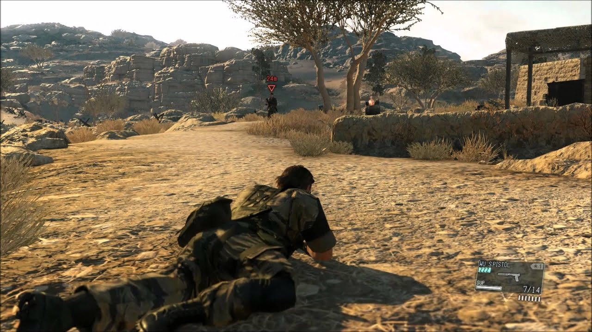
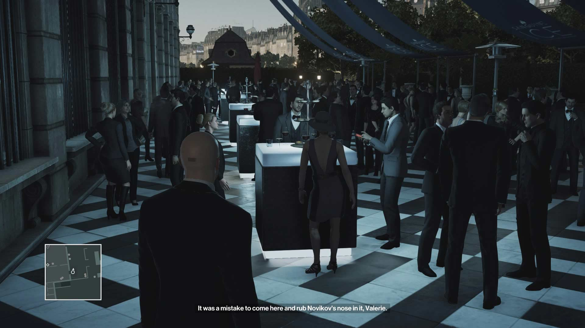
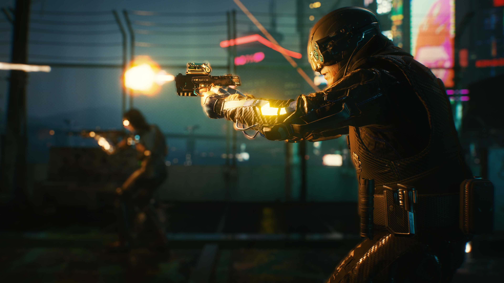

Uma série muito consagrada de jogos da temática furtiva.
Essa serie criada pelo consagrado Hideo Kojima, nos inspiramos na temática furtiva, e parte da forma como o combate funciona.
Uma série de jogos também da temática de furtividade.
Desta série, nos inspiramos no estilo stealth, onde o jogador deve evitar ser percebido, fazendo uso de furtividade para evadir dos inimigos.
Um jogo que será lançado em novembro deste ano.
Nos inspiramos no estilo visual do jogo, o CyberPunk, que é o futurista sujo, conhecido por seu enfoque de "Alta tecnologia e baixa qualidade de vida".
Roger e sua tripulação são emboscados pela tropa espacial GalaxyCent, confundidos como piratas do espaço são levados para a prisão FortWall, um local com o sistema de segurança mais tecnológico e seguro de toda Centauro. Logo na chegada sua irmã Elayna foi separada do grupo e levada para uma cela especial junto ao comandante Isac Sexto, um tirano que a muitos anos manda e desmanda em toda a ala sul de Centauro.
O jogo se passa dentro de uma estação espacial, com vários corredores pelos quais o jogador deve passar até chegar em seu objetivo final, que é escapar do local.
Roger, Elayna, Fernando e Isac.
A jogabilidade do jogo gira em torno de chegar até um local específico dentro da estação, o hangar. Lá, ele deve pegar uma nave e utilizar para escapar do local. Para isso, o jogador pode se utilizar de vários artifícios, como granadas de pulso eletromagnético, armas, entre outros, após encontrá-los dentro da estação.